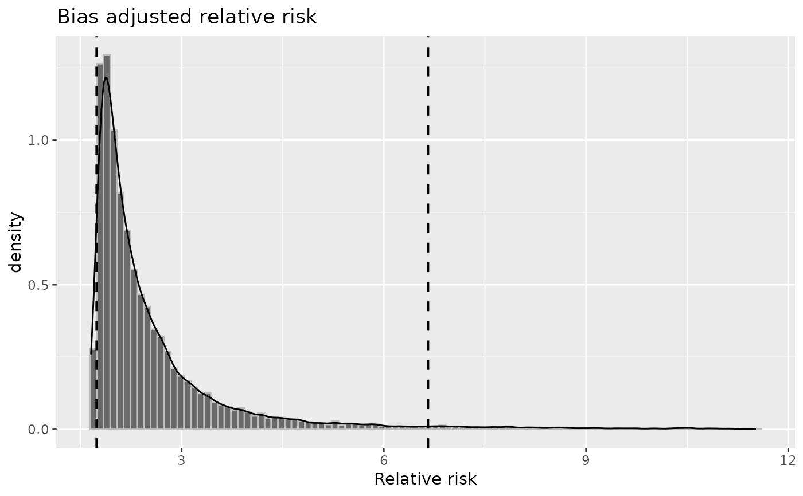
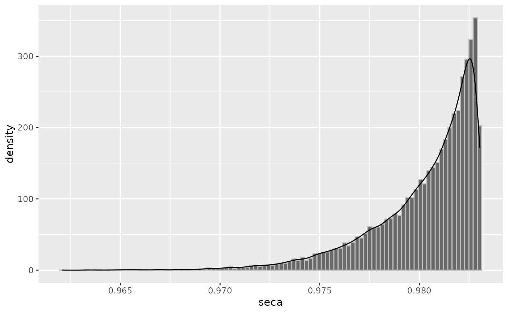
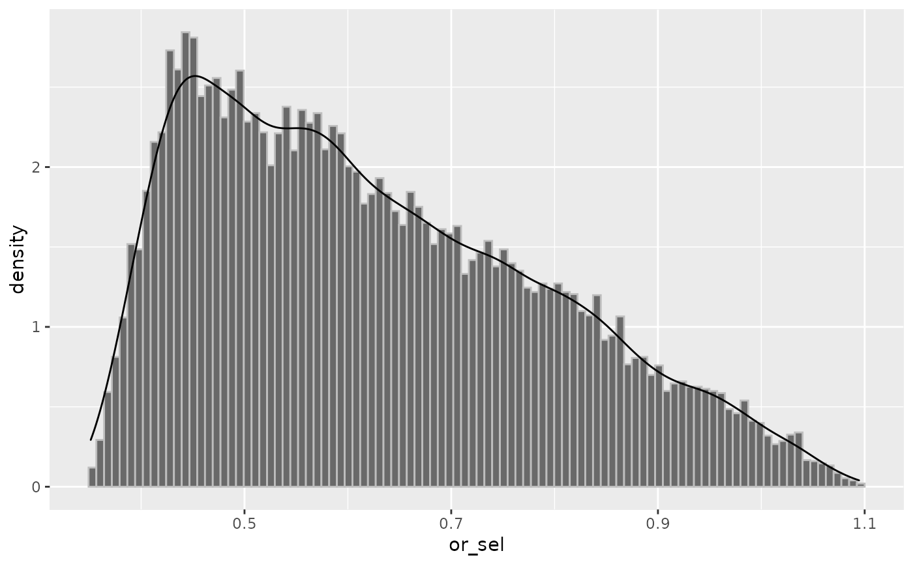
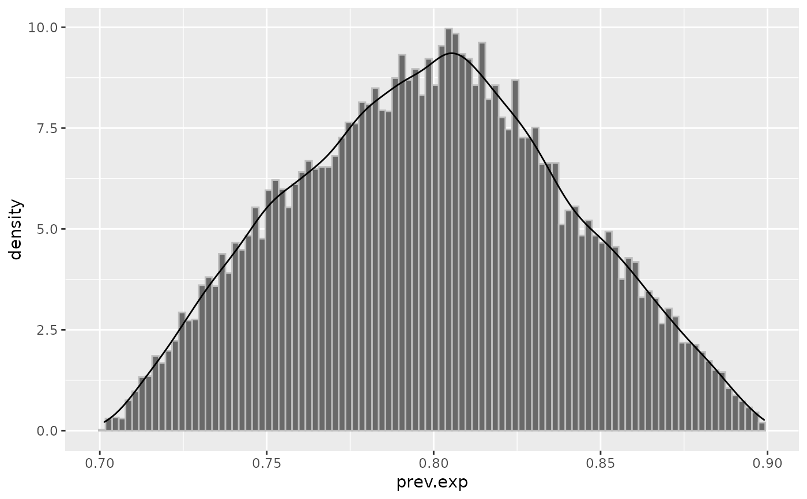
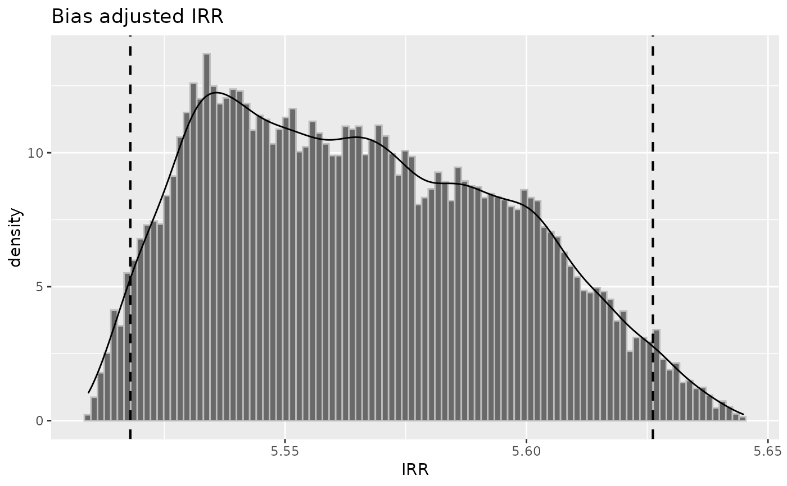
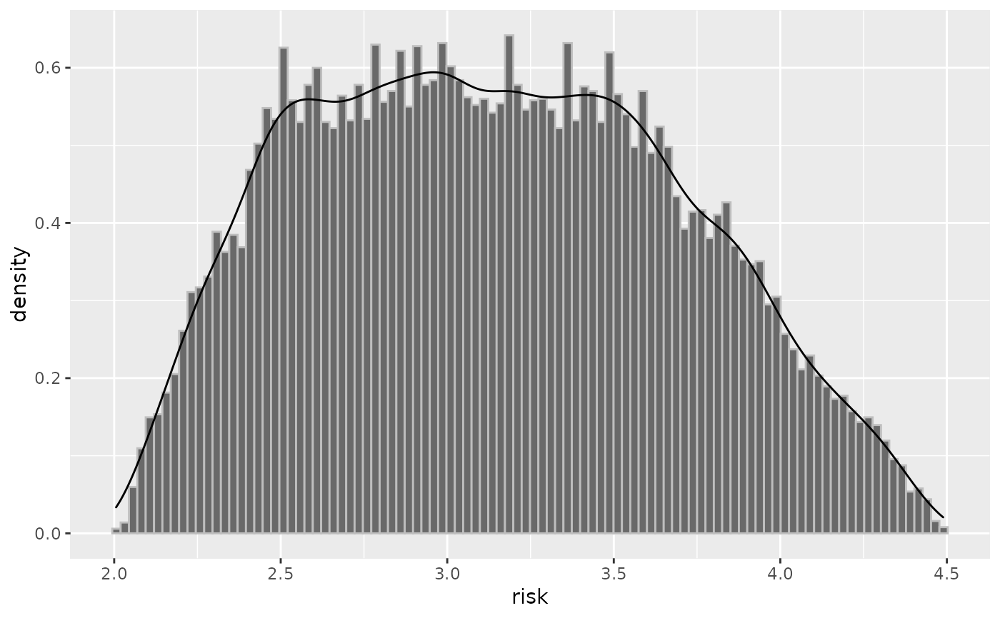

This takes a probsens-family object and produces the distribution plot of
chosen bias parameters, as well as distribution of adjusted measures (with confidence
interval).
# S3 method for episensr.probsens plot( x, parms = c("rr", "or", "rr_tot", "or_tot", "irr", "irr_tot", "seca", "seexp", "spca", "spexp", "or_sel", "prev.exp", "prev.nexp", "risk"), ... )
| x | An object of class "episensr.probsens" returned from the
|
|---|---|
| parms | Choice between adjusted relative risk ( |
| ... | Other unused arguments. |
set.seed(123) plot(probsens(matrix(c(45, 94, 257, 945), dimnames = list(c("BC+", "BC-"), c("Smoke+", "Smoke-")), nrow = 2, byrow = TRUE), type = "exposure", reps = 20000, seca.parms = list("trapezoidal", c(.75, .85, .95, 1)), spca.parms = list("trapezoidal", c(.75, .85, .95, 1))), "rr")#>#> Warning: Removed 784 rows containing non-finite values (stat_bin).#> Warning: Removed 784 rows containing non-finite values (stat_density).set.seed(123) plot(probsens(matrix(c(45, 94, 257, 945), dimnames = list(c("BC+", "BC-"), c("Smoke+", "Smoke-")), nrow = 2, byrow = TRUE), type = "exposure", reps = 20000, seca.parms = list("beta", c(908, 16)), seexp.parms = list("beta", c(156, 56)), spca.parms = list("beta", c(153, 6)), spexp.parms = list("beta", c(205, 18)), corr.se = .8, corr.sp = .8), "seca")set.seed(123) plot(probsens.sel(matrix(c(136, 107, 297, 165), dimnames = list(c("Melanoma+", "Melanoma-"), c("Mobile+", "Mobile-")), nrow = 2, byrow = TRUE), reps = 20000, or.parms = list("triangular", c(.35, 1.1, .43))), "or_sel")set.seed(123) plot(probsens.conf(matrix(c(105, 85, 527, 93), dimnames = list(c("HIV+", "HIV-"), c("Circ+", "Circ-")), nrow = 2, byrow = TRUE), reps = 20000, prev.exp = list("triangular", c(.7, .9, .8)), prev.nexp = list("trapezoidal", c(.03, .04, .05, .06)), risk = list("triangular", c(.6, .7, .63)), corr.p = .8), "prev.exp")set.seed(123) plot(probsens.irr(matrix(c(2, 67232, 58, 10539000), dimnames = list(c("GBS+", "Person-time"), c("HPV+", "HPV-")), ncol = 2), reps = 20000, seca.parms = list("trapezoidal", c(.4, .45, .55, .6)), spca.parms = list("constant", 1)), "irr")set.seed(123) plot(probsens.irr.conf(matrix(c(77, 10000, 87, 10000), dimnames = list(c("D+", "Person-time"), c("E+", "E-")), ncol = 2), reps = 20000, prev.exp = list("trapezoidal", c(.01, .2, .3, .51)), prev.nexp = list("trapezoidal", c(.09, .27, .35, .59)), risk = list("trapezoidal", c(2, 2.5, 3.5, 4.5)), corr.p = .8), "risk")